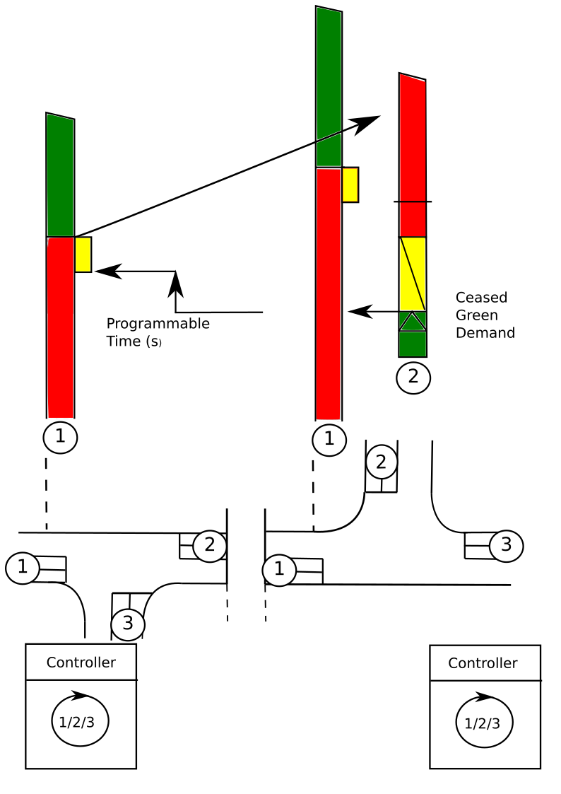
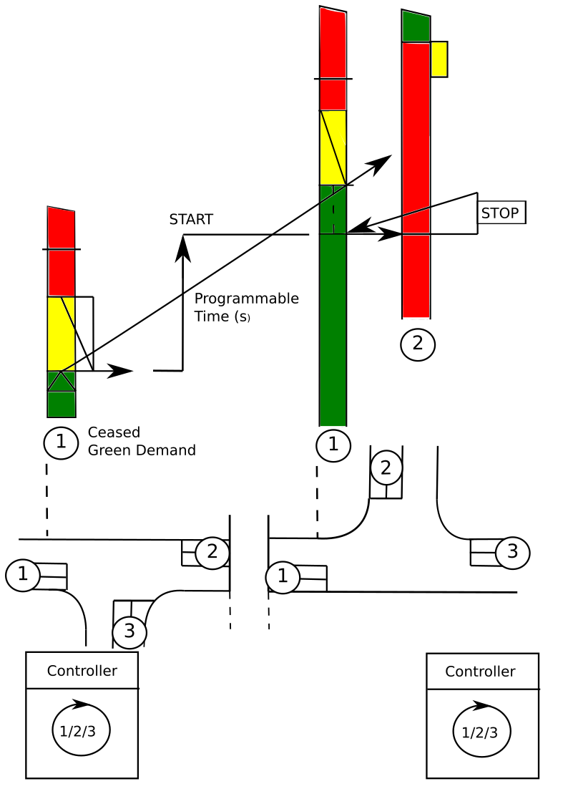

5. Coordination between traffic light controllers¶
5.1. General concepts¶
Coordination between Traffic Light Controllers (TLC) implies that several intersections are controlled together in a coordinated control mode at local or central level. Regardless of operational mode, prerequisites are - among other things, that TLC:s must use the same time plan and must be in synchronous operation.
Local coordination can be applied in minor systems (up to 4 intersections). Control will in these systems be made with a common and variable cycle depending on the traffic.
Central coordination can be applied in major systems (up to some 20 intersections or more). In central coordination a special master (M), a combination of master/controller (M/C) or a system of cableless linking is used. Within the system control bits should be sent according to time plans designed in advance with selected and fixed cycle times for different traffic levels. In the individual intersection a certain smaller degree of traffic adaption should be allowed, however, only within the framework of the fixed and given cycle time.
The two coordination levels should be possible to combine. During peak hours should e.g. the entire traffic signal area be coordinated at central level while a split in locally coordinated sub areas should be possible during normal off-peak hours.
{kind=link}
Figure 5.1: Types of coordination
Since there are variants of coordination which are not strictly centralized but still uses the same principles of communication, the term coordination with synchronized cycle counter is used rather than central coordination here on after.
{kind=link}
Figure 5.2: Coordination
5.2. Coordination type “Local coordination”¶
Local coordination is achieved by supplementing the TLC:s control bits of the signal groups with special control bits from signal group(s) in another intersection.
This can be achieved with the following status modes:
- “Front edge of green wave”, which is normally sent when conflicting signal group in downstream traffic lights turns yellow
- “Rear edge of green wave”, which is normally sent when demand for green ends or yellow is sent to downstream TLC.
Front edge of green wave normally prevents signal groups in other TLC:s to start and rear edge of green wave normally extends signal groups in green, normally when demand for green ends, or yellow.
Commands should be able to be sent from an optional change in signal group status and should additionally be able to be supplemented with a timer which initiates counts from these changes.
Variation in programming to achieve desired functionality according to specifications may vary without having any impact on coordination communication.

Figure 5.3: Control of front edge |

Figure 5.4: Control of rear edge |
{kind=link}
{kind=link}
5.3. Coordination with synchronized cycle counter¶
Coordination with synchronized cycle counter should typically be possible to operate in multiple time plans with optional signal group sequence split and/or cycle time.
The cycle time of the time plans should be possible to select in increments of one second up to at least 180 seconds.
Signal group(s) should typically be able to have green 2 times per cycle.
Change between time plans should typically be possible at optional points in the cycle, at different points in different time plans. Change must not follow so that fixed times such as red/yellow, minimum green, pedestrian green and green/yellow will be reduced or excluded. Coordination should be achieved by exchanging the normal start bits against special control bits which should be possible to send per one second steps.
If control bits to the local TLC is missing for 120 seconds, the TLC should automatically revert to a predetermined back up or safety mode. If/when the control bits returns, the TLC should automatically return to coordination.
The control bits, arranged and time distributed within the framework of the cycle of the time plan, should give the coordinated installation a certain signal group sequence, split and offset between TLC’S.
The control bits should be possible to use internally in a TLC or be possible to send externally to another TLC which consequently also should be able to receive externally incoming control bits. Together with new control bits, the internal logic of the TLC should in other aspects proceed normally, among other things, for communication between the signal groups.
5.4. Coordination with control bits¶
Coordination with internal control bits
With internal control bits, only information about time plan/traffic situation, initialization and clock sync needs to be sent and received.
Coordination with external control bits
In addition to the control bits in the previous paragraph, start bits and stop bits must be sent and received.
TLC:s should also be able to receive external start/stop bits. If the active time plan is controlled by the other TLC, it must also be able to receive subscription/request of e. g traffic data, detector logic and signal groups status etc.
5.5. General RSMP requirements¶
Communication must be established directly between TLC:s. This demands the following general requirements:
- In every TLC, it must be possible to connect to other TLC:s and to receive connections from other TLC:s (client-server).
- The TLC must have a list with every connected and communicating TLC with editable communication parameters for each individual unit.
- The mentioned list above includes IP-addresses and signal exchange lists for every connected TLC.
- The TLC must be configurable with signal exchange lists for every TLC that communication is intended with. The signal exchange lists contain important information such as siteId and component-id which are needed to establish communication. Relevant parts of signal exchange lists must therefore be easily editable, in particular siteId, component-id, etc.
- The TLC must be able to communicate with the supervision system at the same as communicating between TLC:s.
5.6. Functional requirements of the TLC¶
To establish coordination, it is required that both TLC:s use suitable time plan/traffic situation and synchronize their cycle timers.
- It must be possible to configure TLC:s as leader/follower
- One leader TLC should be able to communicate with up to 20 follower TLC:s.
The following input/output is needed
| Command types | Description |
|---|---|
| M0002 | Time plan |
| M0006/M0013 (Input) | Coordination can continue (local coordination) (true/false) |
| M0006/M0013 (Input) | Synchronization pulse (coordination with synchronized cycle counter) (true/false) |
| M0006/M0013 (Input) | START/STOP bit (true/false) |
Figure 5.5: Input needed
| Status types | Description |
|---|---|
| S0004 (Output) | Coordination is possible (true/false) |
| S0004 (Output) | Synchronization step (local coordination) (true/false) |
| S0004 (Output) | START/STOP bit (true/false) |
Figure 5.6: Output needed
Please note:
- securityCode is ignored at TLC-TLC-communication. Fields for securityCode still must be sent at communication exchange – but contents can be empty.
- M0010 (Start/Stop) also exists in SXL but is not used in coordination.
5.7. Notes about JSon¶
Every field must be present in every message at communication exchange according to the signal exchange list. This applies even if the fields are empty. In the example below ”securityCode” is included in a command despite that ”securityCode” is ignored at TLC-TLC communication. The field is empty for this reason.
{
"mType": "rSMsg",
"type": "CommandRequest",
"mId": "E68A0010-C336-41ac-BD58-5C80A72C7092",
"ntsOId": "",
"xNId": "",
"cId": "KK+AG9998=001TC000",
"arg": [{
"cCI": "M0002",
"n": "status",
"cO": "setPlan",
"v": "True"
},{
"cCI": "M0002",
"n": "securityCode",
"cO": "setPlan",
"v": ""
},{
"cCI": "M0002",
"n": "timeplan",
"cO": "setPlan",
"v": "5"
}]
}
5.8. Communication establishment¶
Follower TLC’s acts server and waits for a leader TLC to connect. Should communication fail, it is the responsibility of the leader TLC to connect again.
When the leader TLC has connected, messages between the TLC’s are sent according the initialization sequence.
Communication is continuously established even if coordination is not active.
The handshake sequence is defined in the RSMP specification, section Communication establishment between sites.
5.9. Initialization sequence for local coordination¶
- Leader verifies that coordination is possible through subscription on output (S0004) coordination is possible in all followers. If coordination isn’t possible, coordination is terminated.
- Leader switches to coordinated time plan in its own TLC.
- Leader sends command to all followers to switch to coordinated time plan.
- Leader waits at own synchronisation step until synchronisation step is active in all followers. Leader must subscribe to S0004 Synchronisation step in all followers to verify this.
- Leader activates input (S0013) coordination can continue in all followers about continued coordination.
- Coordination active. Leader continuously checks that coordination still is possible in all followers (see step 1) through subscription on output (S0004) coordination is possible. Coordination is terminated if it turns false in any follower.
- Leader sends START/STOP order using M0006 or M0013 to followers during each cycle.
- Leader receives START/STOP order using output (M0004) from followers during each cycle.
Figure 5.7: Sequence for local coordination
5.10. Initialization sequence for coordination with synchronized cycle counter¶
- Leader verifies that coordination is possible through subscription on output (S0004) coordination is possible in all followers. There needs to be a per site configuration possibility for each follower whether coordination should proceed regardless if a single follower can’t activate coordination.
- Leader switches to coordinated time plan in its own TLC.
- Leader sends command to all followers to switch to coordinated time plan. Followers switch time plan when their cycle counters reaches zero.
- Leader sends synchronization pulse when its base cycle counter reaches zero. Synchronization pulse means that the cycle counter should be set to zero. Followers adds any configured offset time on their own.
- Coordination active. Leader continuously checks that coordination still is possible in all followers (see step 1) through subscription on output (S0004) coordination is possible. Coordination is terminated if output (S0004) coordination is possible turns false is any follower TLC.
- If external control bits are used: Leader sends START/STOP order to followers during each cycle
- If external control bits are used: Leader receives START/STOP order using output (M0004) from followers during each cycle.
Figure 5.8: Sequence for coordination with synchronized cycle timer
5.11. Termination sequence¶
- If using local coordination, the leader TLC deactivates input (S0013) coordination can continue in all followers.
- The leader TLC sends a command to followers to change time plan according to own programming, this command can also come from a supervision system.
5.12. Message priority¶
At simultaneous communication TLC-TLC and TLC-supervision system – then TLC-supervision system has higher priority.
5.13. Error handling¶
If a command or status request refers to a signal group or detector logic which does not exist, then only MessageNotAck will be sent as answer. No response on command (CommandResponse / StatusUpdate / StatusResponse) needs to be sent because no command is executed.
A command should be acknowledged when received using CommandResponse, but for certain commands this is no guarantee that the command really is executed. To confirm command execution, Leader TLC needs to subscribe to corresponding statuses and check whether expected statues changes according to command.
MessageNotAck terminates coordination, but communication continues to be active.
If an error occurs which causes MessageNotAck to be sent, then alarm A0005 must continuously be activated in the TLC.
- Alarm is activated at first received MessageNotAck. The TLC should not try to send the same command multiple times as an effect of MessageNotAck with the intention of later succeeding with the command.
- Alarm is activated in both of the TLC:s sending MessageNotAck as well as the TLC the message.
- Alarm A0005 is sent to the supervision system.
- The next message which leads to MessageAck deactivates alarm A0005
5.14. Error codes for MessageNotAck¶
In order to standardize contents in MessageNotAck (”reason”), use this common error code list
| Error code (Content of “Reason”) | Description |
|---|---|
| 0001 | SXL mismatch. Command does not exist |
| 0002 | SXL mismatch. Status does not exist |
| 0003 | SXL mismatch. Wrong number of arguments |
| 0004 | SXL mismatch. Argument out of range |
| 0005 | SXL mismatch. Argument improperly formatted |
| 0006 | I/O out of range or not found |
| 0007 | I/O cannot be modified |
| 0008 | Plan does not exist |
| 0009 | Plan cannot be changed due to higher priority command |
| 0010 | CPU error |
| 0011 | Invalid message |
Figure 5.9: Error codes